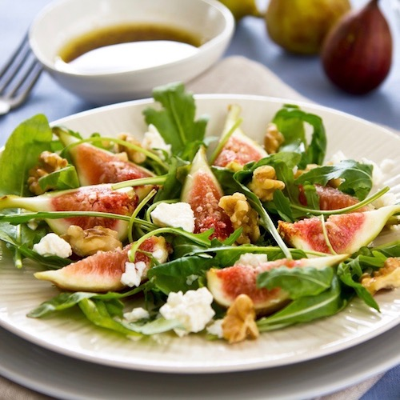
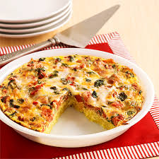
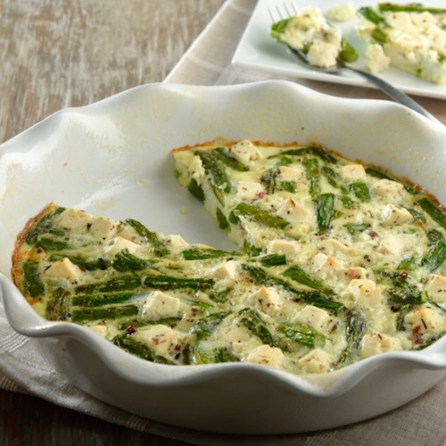
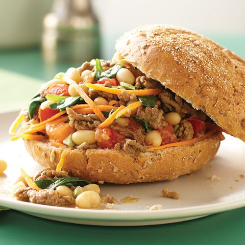
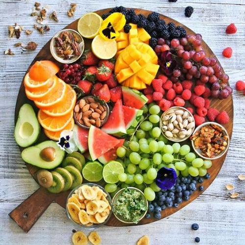
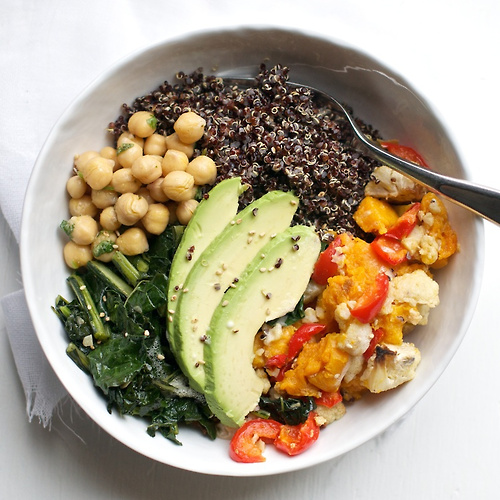
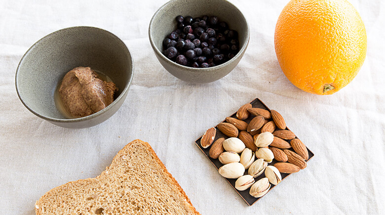
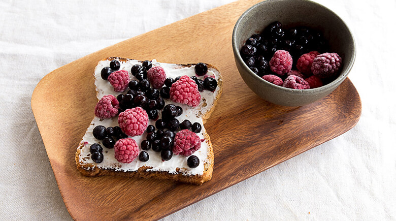

_foodie
porque la comida tambien se prueba con los ojos.






Tostada de crema de cacahuate y naranja
Posteado 2017 - Mayo 27
Toma un pan tostado y unta crema de cacahuate. Pela la naranja y córtala en rebanadas. Coloca las rebanadas de naranja sobre el pan y agrega pedazos de almendra. La naranja y el cacahuate se llevan tan bien que seguro querrás comer más de dos panes.

Adam C.
This is just amazing!
Laurent T.
C'est génial !
Carmen R.
Me ha gustado mucho esta receta. Simple y deliciosa!
Tostada de frambuesas y moras azules
Posteado 2017 - Junio 01
Unta queso crema sobre tu pan tostado. Agrega frambuesas y moras azules. Más fácil y rápido imposible. Con esta receta, en lugar de desayuno pensarás que estás comiendo un postre. La buena noticia es que es bastante saludable porque no tiene azúcar añadida.
Carmen R.
Tengo que probarla!
Laurent T.
Super !
Adam C.
Wow! This is my favourite.